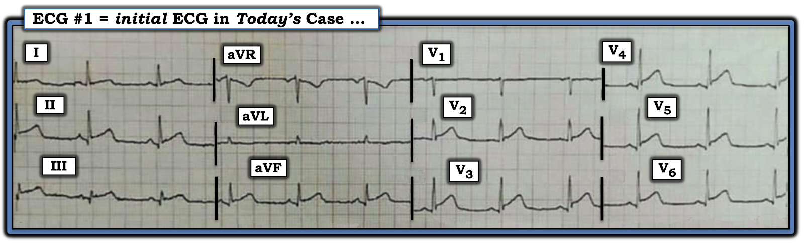
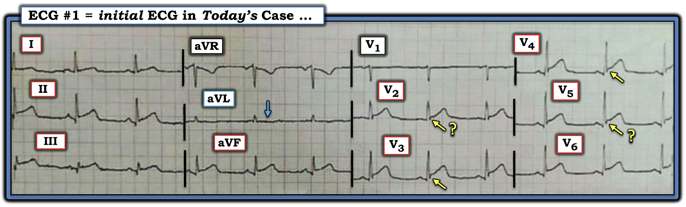
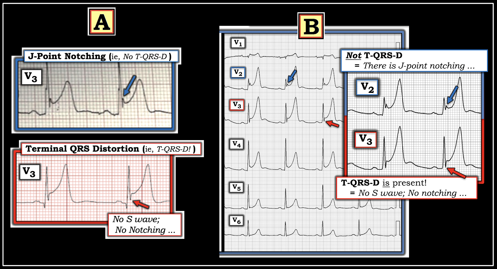
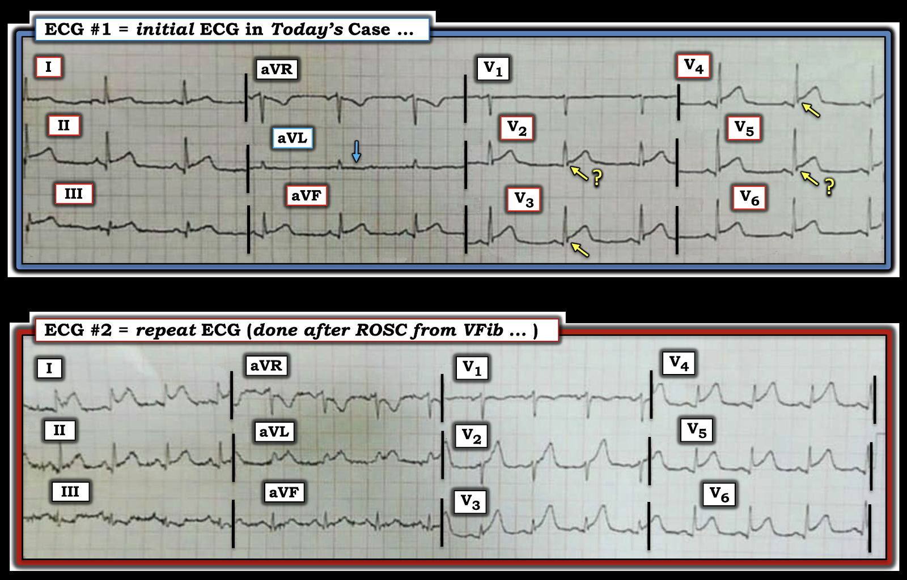
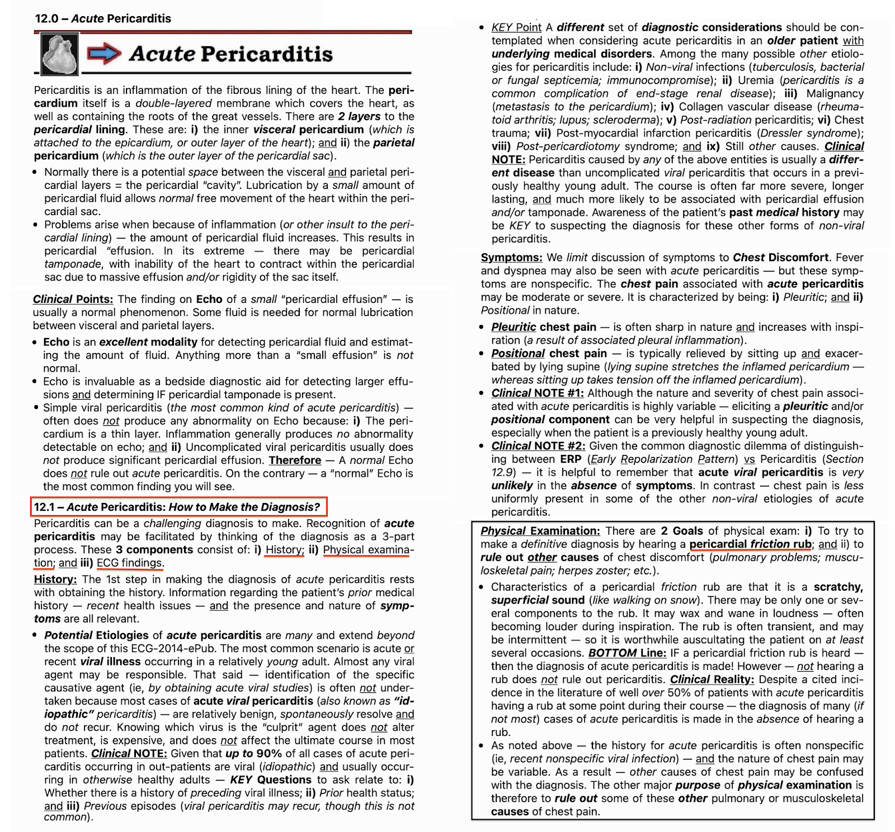
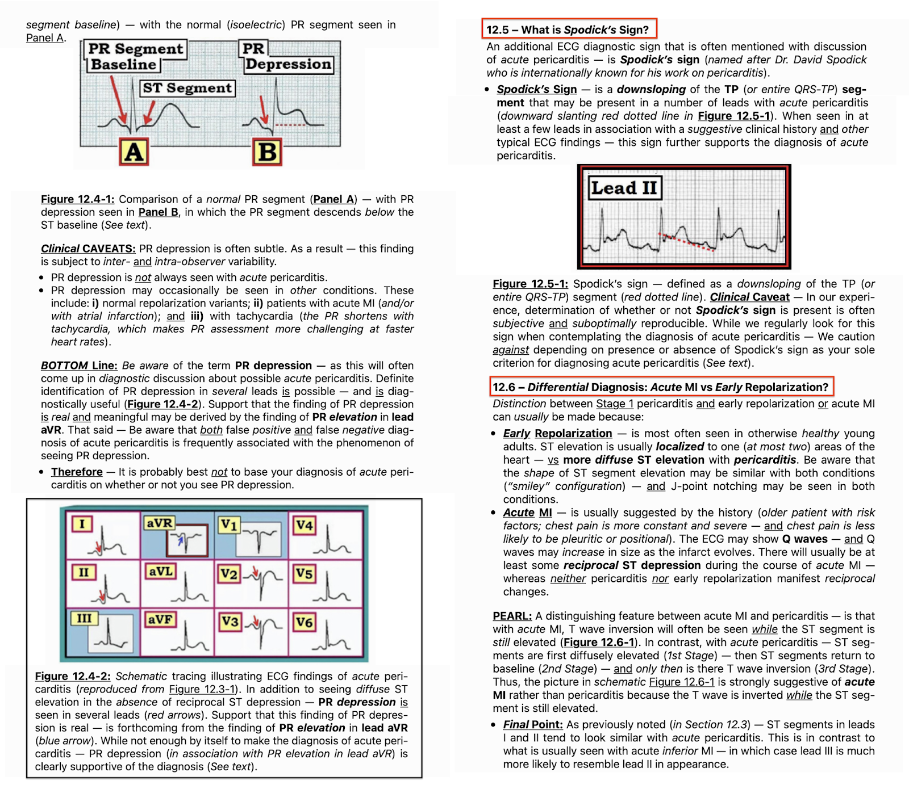
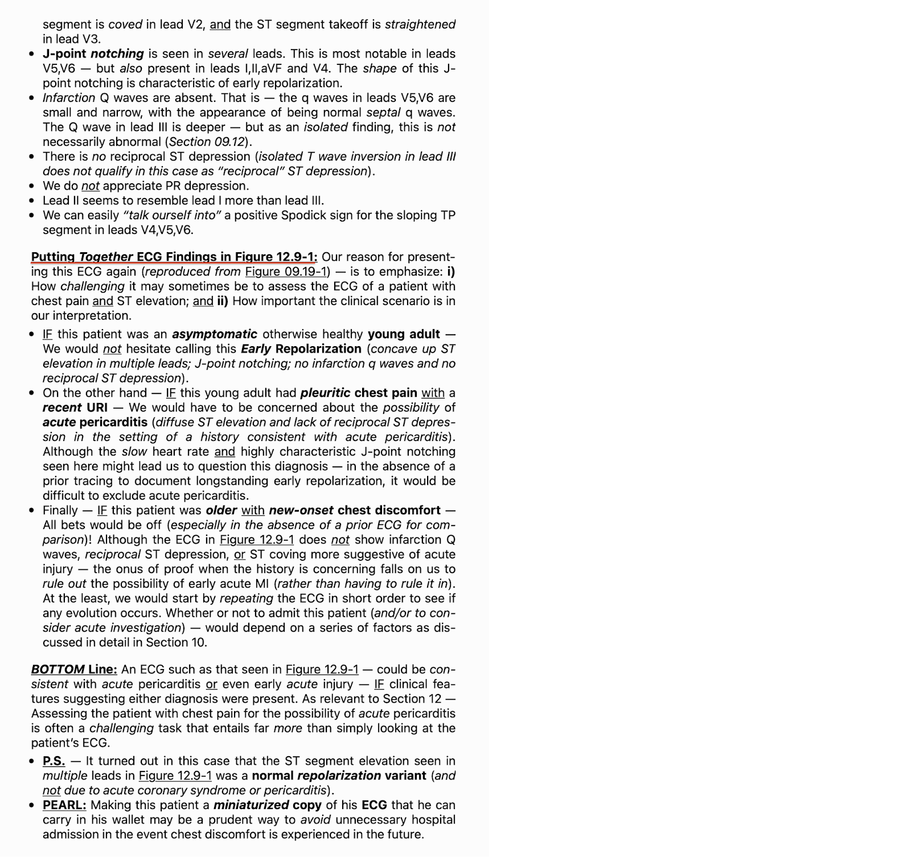

ECG Blog #514 — Viêm màng ngoài tim cấp?
Điện tâm đồ trong Hình 1 được ghi từ một người đàn ông trung niên trước đó khỏe mạnh — đến ED (khoa cấp cứu – Emergency Department) vì đau ngực mới (CP – Chest Pain).
- Bác sĩ tim mạch trực ghi nhận ST chênh lên ở nhiều chuyển đạo — và chẩn đoán bệnh nhân bị viêm màng ngoài tim cấp, chủ yếu dựa trên điện tâm đồ này.
CÂU HỎI:
- BẠN có đồng ý với chẩn đoán viêm màng ngoài tim cấp không?
- Nếu có — Tại sao?
- Nếu không — Tại sao không?
- Điểm MẤU CHỐT: Làm thế nào để tăng độ chắc chắn cho chẩn đoán của bạn?


=============================
TRẢ LỜI các câu hỏi ở trên:
Điện tâm đồ trong Hình 1 cho thấy nhịp xoang — với các khoảng (PR-QRS-QTc) và trục bình thường — và không có lớn buồng tim.
Về Thay đổi Q-R-S-T.
- Sóng Q — Có các sóng Q nhỏ và hẹp ở nhiều chuyển đạo (tức là ở các chuyển đạo II,III,aVF; và ở các chuyển đạo V3 đến V6). Dù có sóng Q ở khá nhiều chuyển đạo như vậy — việc mỗi sóng Q này đều nhỏ và hẹp khiến chúng không có giá trị chẩn đoán.
- Tăng tiến sóng R — Có chuyển tiếp sớm, sóng R đã chiếm ưu thế ngay từ chuyển đạo V2. Dù vậy, ý nghĩa lâm sàng của vùng chuyển tiếp sớm này trong bối cảnh bản ghi này là không chắc chắn và không có giá trị chẩn đoán.
- Thay đổi ST-sóng T — Có ST chênh lên lan tỏa! Ngoài ST chênh lên ở từng chuyển đạo trong 7 chuyển đạo có sóng Q nêu trên — còn có ST chênh lên ở chuyển đạo I và V2 (tức là tổng cộng 9/12 chuyển đạo có ST chênh lên).
=============================
Dù đã nói như trên — những điểm trình bày dưới đây và dấu hiệu điện tâm đồ mà tôi đánh dấu bằng các mũi tên VÀNG trong Hình 2 giải thích vì sao tôi nghi ngờ bệnh nhân này không bị viêm màng ngoài tim cấp.
- CÂU HỎI: BẠN nghĩ sao?


ĐIỂM THEN CHỐT (PEARL) #1: Bài học MẤU CHỐT rút ra từ ca hôm nay — là đừng vội chẩn đoán viêm màng ngoài tim cấp ở một người đàn ông trung niên đến khám vì CP mới. Những lý do khiến tôi ngay lập tức nghi ngờ rằng chẩn đoán trong ca hôm nay khó có thể là viêm màng ngoài tim cấp gồm:
- Lý do #1 = Thống kê! — Viêm màng ngoài tim cấp không phổ biến. Theo kinh nghiệm của tôi — viêm màng ngoài tim cấp hiếm gặp trong bối cảnh lâm sàng như ca hôm nay (tức là ở một người trưởng thành trung niên trước đó khỏe mạnh — đến ED vì đau ngực mới khởi phát). Thay vào đó, ACS (hội chứng vành cấp – Acute Coronary Syndrome) là nguyên nhân phổ biến hơn nhiều gây CP mới khi một người trưởng thành trung niên hoặc lớn tuổi đến ED với than phiền này. Vì vậy, để giúp mình cưỡng lại cám dỗ chẩn đoán viêm màng ngoài tim cấp theo phản xạ mỗi khi thấy ST chênh lên ở nhiều chuyển đạo — tôi tâm niệm (và thường xuyên tự nhắc lại) câu châm ngôn do BS Stephen Smith đưa ra — “Chẩn đoán viêm màng ngoài tim cấp thì bạn tự gánh lấy rủi ro”.
Các lý do bổ sung:
- Ca hôm nay được gửi cho tôi mà không đề cập đến các dấu hiệu dương tính và âm tính có ý nghĩa liên quan đến tính chất đau ngực của bệnh nhân. Dù có ngoại lệ — đau ngực do viêm màng ngoài tim cấp thường có tính chất kiểu màng phổi (tăng khi hít vào) —và thường thay đổi theo tư thế (nặng hơn khi nằm ngửa — và giảm khi ngồi dậy và cúi người ra trước). Cơ sở sinh lý của ảnh hưởng tư thế này là tư thế nằm ngửa làm căng màng ngoài tim đang viêm — trong khi ngồi dậy và cúi người ra trước làm giảm sự căng đó.
- Cũng không có đề cập nào đến các yếu tố thuận lợi tiềm tàng có thể gợi ý chẩn đoán viêm màng ngoài tim cấp (tức là không có bệnh lý nội khoa đang mắc nào được biết có thể liên quan đến viêm màng ngoài tim — và không đề cập đến nhiễm virus gần đây). Dù viêm màng ngoài tim có rất nhiều nguyên nhân tiềm tàng — bối cảnh lâm sàng thường gặp nhất của viêm màng ngoài tim cấp ở người trước đó khỏe mạnh là một người trưởng thành trẻ đến khám vì bệnh cấp tính do virus (Xem PHẦN BỔ SUNG bên dưới).
- Cuối cùng — ca hôm nay được gửi cho tôi mà không đề cập đến việc đã nghe tìm tiếng cọ màng ngoài tim (mà NẾU nghe thấy, sẽ xác nhận chẩn đoán viêm màng ngoài tim cấp — dù không nghe thấy cũng không loại trừ chẩn đoán).
ĐIỂM THEN CHỐT (PEARL) #2:
Khi nghĩ đến chẩn đoán viêm màng ngoài tim cấp — mà các yếu tố bệnh sử và khám thực thể
nêu trên không được xem xét (và không được ghi trong hồ sơ như những dấu hiệu dương tính hoặc âm tính có ý nghĩa) — thì điều này gần như luôn luôn có nghĩa là (các) bác sĩ điều trị đã không đánh giá bệnh nhân một cách đầy đủ.
- Nói đơn giản — NẾU ghi chép của bác sĩ không nêu cụ thể "Không có tiếng cọ màng ngoài tim" — thì điều này cho tôi biết với độ chính xác 99% rằng bác sĩ hoặc đã không nghe ngực với chủ đích tìm tiếng cọ và/hoặc đơn giản là không nhận thức được rằng cách TỐT NHẤT (và nhanh nhất) để xác nhận viêm màng ngoài tim cấp là phát hiện tiếng cọ.
- LƯU Ý: Xem PHẦN BỔ SUNG bên dưới — để biết thêm về chẩn đoán lâm sàng và điện tâm đồ của viêm màng ngoài tim cấp.
=============================
ĐIỂM THEN CHỐT (PEARL) #3:
Bằng chứng mạnh nhất chống lại chẩn đoán viêm màng ngoài tim cấp trong ca hôm nay — là sự hiện diện của T-QRS-D (biến dạng phần cuối QRS – Terminal-QRS-Distortion). Trên điện tâm đồ ban đầu của ca hôm nay, dấu hiệu điện tâm đồ này thấy không chỉ ở một — mà ở nhiều chuyển đạo! ( = các mũi tên VÀNG trong Hình 2).
- Tôi đã giới thiệu khái niệm T-QRS-D trong ECG Blog #318. Tôi hoàn toàn thừa nhận rằng trước khi tích cực tham gia với vai trò Phó Tổng biên tập (Associate Editor) của Dr. Smith's ECG Blog — tôi chưa từng biết đến dấu hiệu điện tâm đồ này. Trong những năm sau đó, tôi đã gặp rất nhiều ca bệnh khẳng định giá trị lâm sàng của dấu hiệu điện tâm đồ độc đáo này do BS Stephen Smith khởi xướng.
- Khi có mặt — T-QRS-D có thể là một công cụ vô giá để phân biệt giữa biến thể tái cực với viêm màng ngoài tim cấp với OMI cấp (tức là Khi có T-QRS-D thực sự ở bệnh nhân có triệu chứng mới — thì gần như chẩn đoán xác định OMI cấp = nhồi máu cơ tim do tắc – Occlusion-based Myocardial Infarction).
Tôi minh
họa dấu hiệu điện tâm đồ T-QRS-D ở Hình 3 bên dưới, — trong đó tôi ghép các hình lấy từ ECG Blog #318 của tôi. Xin nhắc lại:
- T-QRS-D — được định nghĩa là không có cả sóng J lẫn sóng S ở chuyển đạo V2, V3 và/hoặc chuyển đạo V4.
- Dù định nghĩa đơn giản — dấu hiệu này có thể rất tinh tế! Tôi hoàn toàn thừa nhận rằng tôi đã phải mất một thời gian mới cảm thấy thoải mái và tự tin khi nhận diện nó.
Một bức hình đáng giá 1,000 lời nói — như minh họa trong Hình 3:
- PHÍA TRÊN ở Ô A — Dù ST chênh lên rõ rệt ở chuyển đạo V3 này — đây không phải T-QRS-D, vì có khía rõ ràng ở điểm J (mũi tên XANH DƯƠNG). Bệnh nhân này có biến thể tái cực là nguyên nhân gây ST chênh lên.
- PHÍA DƯỚI ở Ô A — Đây là T-QRS-D, vì ở chuyển đạo V3 này không có khía ở điểm J — và không có sóng S (mũi tên ĐỎ cho thấy sóng lệch cuối cùng của QRS không hề đi xuống dưới đường nền).
Ở Ô B của Hình 3 — tôi đã phóng to các phức bộ QRST ở chuyển đạo V2 và V3 từ các chuyển đạo trước tim trong ví dụ này.
- Ở Chuyển đạo V2: ST chênh lên không phù hợp với T-QRS-D — vì có khía nổi bật ở điểm J (mũi tên XANH DƯƠNG).
- Ở Chuyển đạo V3: Có T-QRS-D — vì không có khía ở điểm J — và không có sóng S (mũi tên ĐỎ cho thấy sóng lệch cuối cùng của QRS không hề đi xuống dưới đường nền).


=============================
Hãy XEM LẠI các mũi tên VÀNG trong Hình 2:
- T-QRS-D — chắc chắn có mặt ở chuyển đạo V3 và V4 trong Hình 2, vì không có khía ở điểm J và không có sóng S (vì sóng lệch cuối cùng của QRS rõ ràng không đi xuống dưới đường nền).
- Tôi tin rằng T-QRS-D cũng có mặt ở chuyển đạo V2 — dù tôi thừa nhận rằng có thể còn nghi vấn liệu sóng lệch cuối cùng của QRS có chạm tới đường nền hay không.
- Với T-QRS-D chắc chắn ở chuyển đạo V3 và V4 (và có lẽ cả ở chuyển đạo V2) — tôi sẽ tính cả chuyển đạo V5 theo liên đới. LƯU Ý: Chưa có dữ liệu ủng hộ giá trị của T-QRS-D như một chỉ điểm của OMI cấp nếu dấu hiệu này chỉ thấy ở chuyển đạo V5.
- ĐIỂM THEN CHỐT (PEARL) #4: Tôi đã thêm một mũi tên XANH DƯƠNG trong Hình 2 để đánh dấu sóng ST-T ở chuyển đạo aVL. Dù rất tinh tế — trong bối cảnh thấy T-QRS-D ở nhiều chuyển đạo (và xét đến biên độ rất nhỏ của QRS ở chuyển đạo aVL) — tôi tin rằng có gợi ý ST chênh xuống soi gương ở chuyển đạo này.
- Xin nhấn mạnh rằng nếu chỉ xét riêng — tôi sẽ không để ý nhiều đến sóng ST-T ở chuyển đạo aVL. Nhưng trong bối cảnh bệnh nhân này có CP mới và T-QRS-D ở nhiều chuyển đạo — tôi diễn giải hình ảnh ở chuyển đạo aVL là cho thấy ST chênh xuống soi gương củng cố chẩn đoán.
=============================
Thông điệp cần nhớ: Nhìn chung theo kinh nghiệm của tôi — T-QRS-D không phải là dấu hiệu thường gặp ở bệnh nhân tắc động mạch vành cấp. Dù vậy — giá trị tiềm năng của dấu hiệu này khi nó có mặt là không thể bàn cãi (như thấy trong ca hôm nay — trong đó dấu hiệu điện tâm đồ này ủng hộ mạnh mẽ OMI cấp).
=============================
ĐIỂM THEN CHỐT (PEARL) #5 (Vượt ra ngoài phần cốt lõi): Tôi rất thích PMcardio — một ứng dụng tuyệt vời gần như luôn cải thiện một cách đáng tin cậy khả năng quan sát các bản ghi khó đọc chỉ trong vài giây. Dù vậy, hữu ích như ứng dụng này — nó không hoàn hảo.
- Ví dụ, trong ca hôm nay — tôi nhận thấy rằng dù số hóa bằng PMcardio cải thiện độ phân giải tổng thể của điện tâm đồ #1 — nó lại làm sự hiện diện của T-QRS-D kém rõ hơn ở một số chuyển đạo do làm thay đổi nhẹ hình dạng điểm J và sóng S.
- ĐIỀU CỐT LÕI: Dù tôi thường xuyên dùng PMcardio để cải thiện khả năng quan sát nhiều bản ghi có độ phân giải kém — với các chi tiết tinh tế trong các rối loạn nhịp phức tạp và các hình ảnh phức tạp (như nhận diện T-QRS-D) — điều quan trọng là BẠN phải kiểm tra độ chính xác của bản số hóa trước khi mù quáng chấp nhận phiên bản PMcardio.
=============================
CA BỆNH hôm nay Tiếp diễn:
Dựa trên nghi ngờ mạnh ban đầu là viêm màng ngoài tim cấp — kế hoạch điều trị bệnh nhân bằng colchicine và NSAID như các biện pháp chống viêm đã được đặt ra.
- Tuy nhiên, khi bệnh nhân vẫn còn ở ED — VFib (rung thất – Ventricular Fibrillation) đột ngột xuất hiện trên monitor. Cần đến hai lần sốc điện khử rung mới khôi phục được nhịp xoang!
- Một điện tâm đồ ghi lại được thực hiện sau ROSC (tái lập tuần hoàn tự nhiên – Restoration Of Spontaneous Circulation).
CÂU HỎI:
Để tiện so sánh 2 điện tâm đồ trong ca hôm nay — tôi đã đặt cả hai bản ghi cạnh nhau trong Hình 4.
- Những thay đổi nào đã xảy ra trên điện tâm đồ sau hồi sức?


TRẢ LỜI:
Giờ đây hẳn đã rõ ràng rằng thay vì viêm màng ngoài tim cấp — bệnh nhân hôm nay đang trong quá trình tiến triển một STEMI cấp diện rộng vào thời điểm ghi điện tâm đồ ban đầu.
- Điện tâm đồ ghi lại cho thấy mức ST chênh lên tăng rõ rệt, cùng với tăng tính tối cấp của sóng T thấy ở gần như mọi chuyển đạo.
- ST chênh xuống soi gương giờ đã rõ ở chuyển đạo III.
- Bức tranh điện tâm đồ tổng thể ở điện tâm đồ #2 gợi ý tắc LAD cấp. Khi vị trí tắc ở LAD đoạn gần — thường sẽ có ST chênh lên ở chuyển đạo aVL kèm ST chênh xuống soi gương ở một hoặc nhiều chuyển đạo thành dưới (như thấy ở điện tâm đồ #2).
- Tôi nghi ngờ lý do chuyển đạo aVL chỉ cho thấy ST chênh xuống rất tinh tế ở điện tâm đồ #1 (như đã chỉ ra ở ĐIỂM THEN CHỐT #4) — là vì ST chênh xuống soi gương có ở aVL lúc đó đã bị giảm bớt do ST chênh lên ngược chiều bắt đầu xuất hiện ở chuyển đạo này, nay đã trở nên rõ ràng ở điện tâm đồ #2.
- Cuối cùng — việc xuất hiện ST chênh lên lan tỏa như vậy (ở 9/12 chuyển đạo), cùng với những dấu hiệu bất ngờ là ST chênh lên rõ rệt như thế ở chuyển đạo I — ST chênh xuống soi gương chỉ ở một trong các chuyển đạo thành dưới — và hoàn toàn không có ST chênh lên ở chuyển đạo V1 dù ST chênh lên rất rõ ở chuyển đạo V2 kế bên — gợi ý khả năng có bệnh nhiều nhánh mạch vành nền.
=============================
NHỮNG Điểm cần học:
- Viêm màng ngoài tim cấp không phổ biến. Nó ít gặp hơn nhiều so với bệnh mạch vành cấp. Vì vậy, ở bệnh nhân có CP mới — chúng ta cần cưỡng lại sự thôi thúc vội kết luận viêm màng ngoài tim cấp cho đến khi đã loại trừ OMI cấp.
- Viêm màng ngoài tim cấp đặc biệt khó xảy ra khi không có các yếu tố thuận lợi (tức là bệnh do virus gần đây hoặc đang mắc; bệnh mạch máu collagen; suy thận, v.v.).
- Nếu bạn cân nhắc chẩn đoán viêm màng ngoài tim cấp — thì bạn cần nghe kỹ để tìm tiếng cọ màng ngoài tim.
- ĐIỂM THEN CHỐT (PEARL) #6: Tôi không biết đã bao lâu trôi qua giữa lúc ghi điện tâm đồ #1 và điện tâm đồ #2 trong ca hôm nay. Điều chúng ta có biết — là với bệnh sử CP mới khởi phát trong ca hôm nay và các bất thường sóng ST-T lan tỏa đã có sẵn ở điện tâm đồ #1 — lẽ ra phải ghi lại điện tâm đồ trong vòng không quá 15-20 phút sau khi ghi điện tâm đồ #1!
- ĐIỂM THEN CHỐT (PEARL) #7: Hãy nhận thức được giá trị chẩn đoán của T-QRS-D. Đôi khi (như trong ca hôm nay) — dấu hiệu điện tâm đồ MẤU CHỐT để xác nhận chẩn đoán sớm OMI cấp lại phụ thuộc vào việc nhận diện T-QRS-D.
==================================
Lời cảm ơn: Xin cảm ơn Ahmed Adel (từ Baghdad, Iraq) đã gửi ca bệnh hôm nay.
==================================

=====================================
PHẦN BỔ SUNG (17/1/2026):
- Nội dung dưới đây về chẩn đoán điện tâm đồ viêm màng ngoài tim cấp — được lấy từ ECG Blog #365.

ECG Media PEARL #25 (9:50 phút Âm thanh) — Những điểm then chốt & cạm bẫy trong chẩn đoán điện tâm đồ viêm màng ngoài tim cấp.
Trong 5 Hình sau đây — tôi đăng phần tóm tắt từ ECG-2014-ePub của tôi về chẩn đoán điện tâm đồ viêm màng ngoài tim cấp.
- BẤM VÀO ĐÂY — để xem bản PDF của tài liệu 9 trang về viêm màng ngoài tim xuất hiện trong các Hình 4 đến 8.
- Một tiêu chuẩn khác đôi khi được nêu là hữu ích để chẩn đoán viêm màng ngoài tim cấp — là tỷ lệ ST/sóng T ở chuyển đạo V6 (Mời xem ECG Blog #365).







